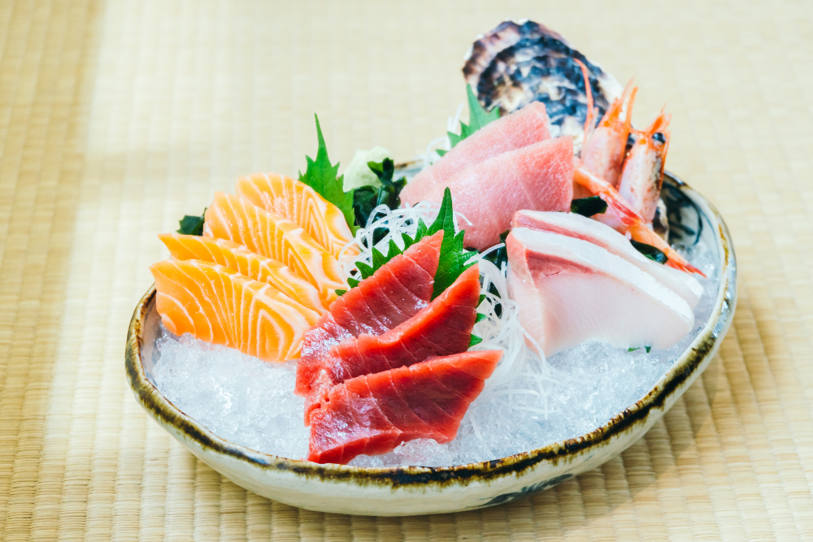

Home
Sashimi

What is Sashimi?
Raw fish! Sashmi! How icky, right? How can anyone eat this stuff? Well, an adventurous spirit, a trust in the craft and history behind Japan's(and various other countries) consumption of raw meat. Now, I personally, only enjoy salmon when I've had it as sashimi! Strange, no? Often eaten with soy sauce, salt, of merely lemon or lime juice, depending on the fish.
Common compliments to sashimi are things like pickled ginger and wasabi. These are used for cleansing the palette to prepare your tastebuds for the next piece of fish.
Ingredients
- Fish, Sashimi grade. Salmon, tuna, and many others are great options.
- Daikon Radish (4"-5")
- Shiso Leaves
- Wasabi(optional)
- Soy Sauce(optional)
Steps
- Skin your Daikon radish. Slice it thinly with a mandolin or a slicer. Stack layers of the thinly cut Daikon and julienne it very thinly. Place in bowl of water and leave it for 15 minutes to make it crisp up. Strain it and remove the moisture.
- Slice the tuna and yellowtail into 1/4"-1/3" thick pieces. Slice the salmon thinly at an angle.
- Serve Sashimi on a plate with radish, Shiso leaves, and Wasabi with a small bowl of soy sauce for dipping.